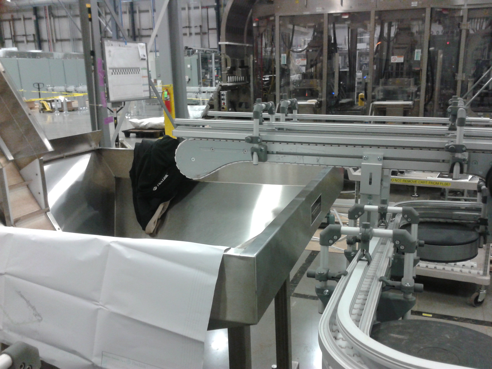
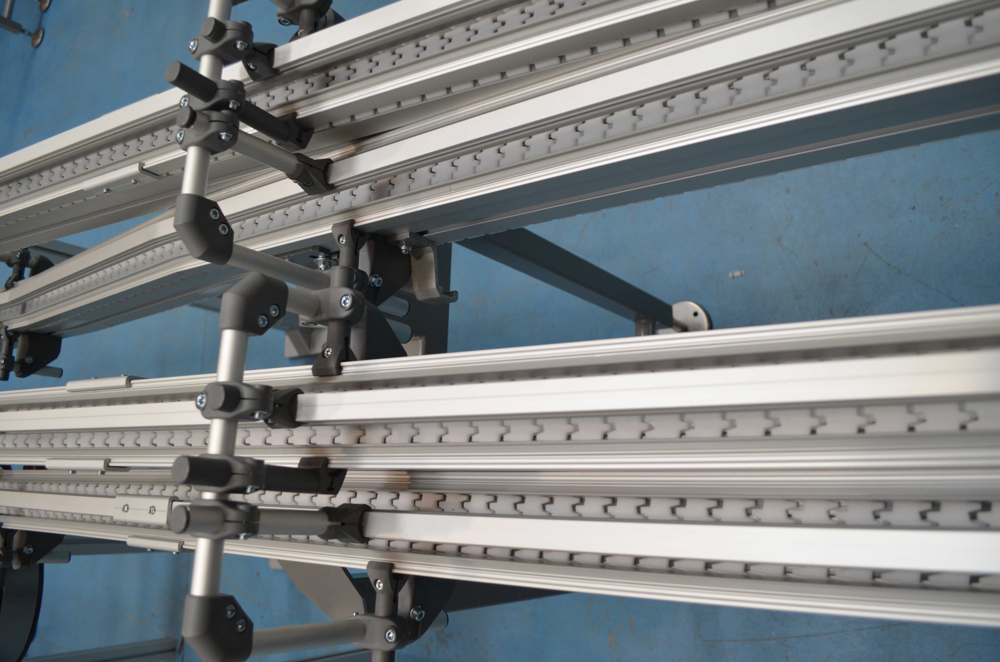
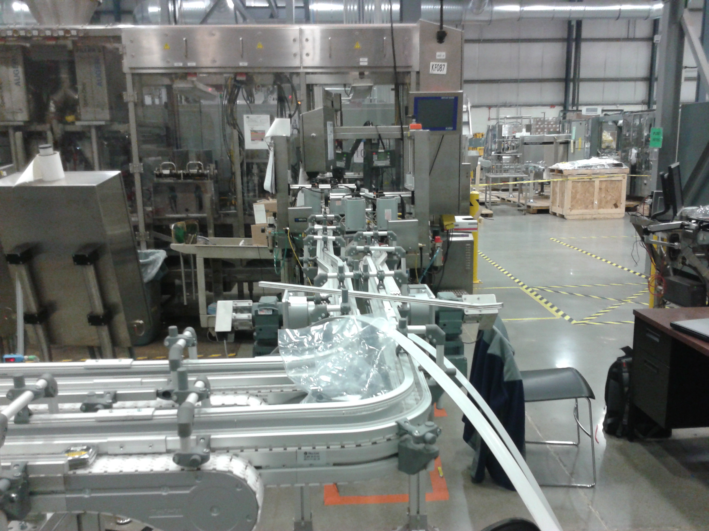

Sirio Nastri Trasportatori opera con un approccio orientato alla qualità, alla sicurezza e alla massima efficienza. Ogni soluzione è progettata per garantire prestazioni elevate e affidabilità nel tempo, grazie a materiali selezionati e tecnologie avanzate.



Sirio Nastri Trasportatori è un’azienda specializzata nella progettazione e realizzazione di sistemi di trasporto industriale. Da anni mettiamo al centro del nostro lavoro innovazione, precisione e affidabilità, offrendo soluzioni moderne e performanti per ogni settore produttivo. Grazie all’esperienza maturata nel tempo e alla cura per ogni dettaglio, realizziamo nastri trasportatori robusti, durevoli e completamente personalizzabili, pensati per rispondere alle esigenze specifiche di ogni cliente.
Offriamo una vasta gamma di servizi personalizzati per soddisfare le esigenze specifiche dei nostri clienti. Dalla progettazione alla produzione, garantiamo soluzioni su misura per ogni progetto.
Il nostro team tecnico sviluppa soluzioni personalizzate per ogni esigenza industriale. Con un approccio orientato alla funzionalità e all’efficienza, progettiamo nastri trasportatori che si integrano perfettamente nei processi produttivi, garantendo prestazioni elevate e affidabilità nel tempo.
La produzione Sirio segue standard rigorosi per assicurare robustezza, durata e sicurezza. Ogni nastro trasportatore è realizzato con materiali selezionati e lavorazioni accurate, per offrire un prodotto solido, efficiente e pronto a resistere alle sfide dell’ambiente industriale.
Il nostro impegno non si ferma alla progettazione e produzione. Offriamo un servizio di assistenza tecnica qualificata che accompagna il cliente in ogni fase: dalla scelta del nastro più adatto, all’installazione, fino alla manutenzione. Siamo sempre disponibili per garantire continuità operativa e soluzioni rapide.
In Sirio investiamo continuamente in ricerca e sviluppo per migliorare i nostri prodotti e anticipare le esigenze del mercato. L’innovazione è al centro del nostro lavoro: studiamo nuove soluzioni, materiali e tecnologie per offrire nastri trasportatori sempre più efficienti, sicuri e performanti.
Il nostro team è composto da professionisti con una lunga esperienza nella progettazione e realizzazione di sistemi di trasporto industriale. Ogni membro porta competenze tecniche specifiche, maturate in anni di lavoro sul campo.
Dalla progettazione meccanica alla produzione, dal montaggio all’assistenza post‑vendita, operiamo come un’unica squadra orientata alla qualità, alla precisione e alla massima affidabilità.
Investiamo costantemente in formazione e innovazione per offrire soluzioni sempre più efficienti, sicure e performanti. La nostra forza è l’unione tra esperienza artigianale e tecnologia moderna.
Il risultato è un team rapido nelle risposte, competente e capace di accompagnare il cliente in ogni fase del progetto, garantendo supporto tecnico dedicato e soluzioni su misura.